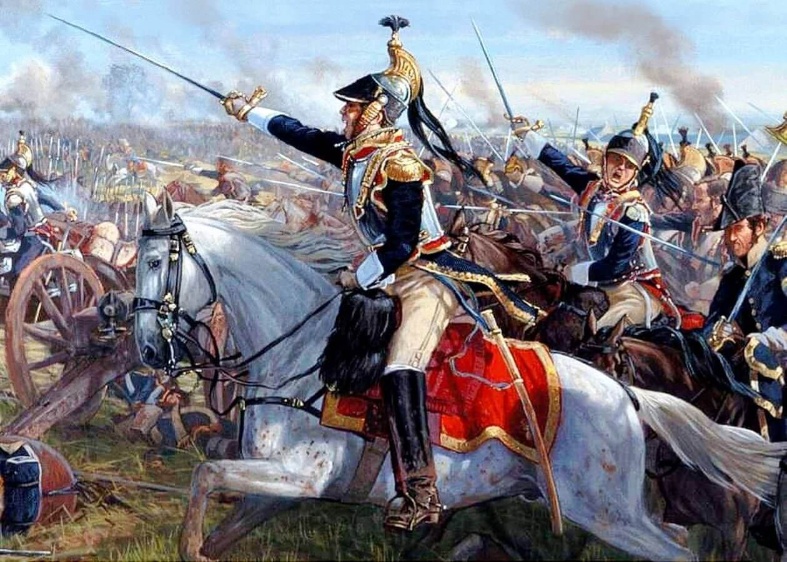
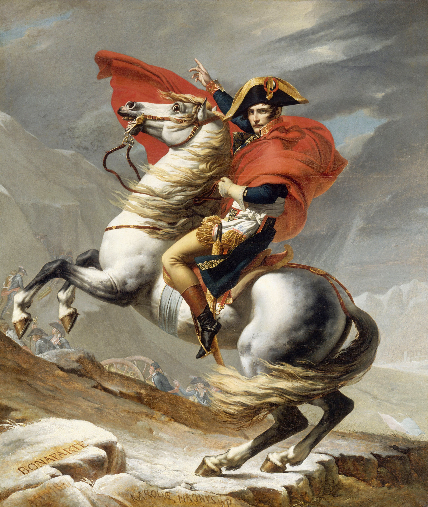

As Guerras Napoleônicas foram uma série de conflitos militares ocorridos entre os anos de 1803 e 1815, envolvendo principalmente a França liderada por Napoleão Bonaparte e uma série de coalizões de países europeus que se opunham à expansão do império francês.
O início das Guerras Napoleônicas é geralmente datado de 1803, quando a Grã-Bretanha declarou guerra à França após a ascensão de Napoleão ao poder. No ano seguinte, Napoleão organizou uma invasão da Inglaterra, mas a tentativa foi frustrada pela supremacia naval britânica. Em 1805, a França derrotou uma coalizão austro-russa na Batalha de Austerlitz e, em seguida, estabeleceu o seu domínio na Europa continental.
As Guerras Revolucionárias Francesas foram divididas em dois períodos: as guerras contra a Primeira e a Segunda Coalizões. A Primeira Coalizão foi composta pelo Sacro Império Romano (dinastia Habsburgo na Áustria e Prússia), pela Grã-Bretanha, Espanha, Holanda e Portugal e alguns outros reinos menores.
O sucesso de Napoleão nas campanhas das Guerras Revolucionárias deu a ele força para dar um golpe militar e assumir o poder em 1799, tornando a França oficialmente um império. Coube a ele encerrar os conflitos com a Segunda Coalizão com um acordo de paz com o Reino Unido, o Tratado de Amiens, em março de 1802. Mas as tensões originadas das Guerras Revolucionárias ainda estavam latentes em todo o continente.
Na Terceira Coligação, os reis da Europa receavam o fim das monarquias e, assim, os adversários franceses continuam a pretender a destruição da economia francesa. Mais uma vez Napoleão venceu e criou o Bloqueio Continental, que consistia em acabar com a economia inglesa ao impor que fossem cortados laços comerciais com a Inglaterra.
Por ocasião da Sexta Coligação, Napoleão assina o Tratado de Fontainebleau - documento em que abre mão do seu governo, e é exilado na Ilha de Elba, de onde consegue fugir, regressando ao poder num governo que dura 100 dias (Governo de Cem Dias).
O exército francês, então, luta contra as forças absolutistas, mas agora com um número reduzido de soldados, os quais são, por fim, derrotados. Chega, assim, o fim das guerras napoleônicas, em 1815.
Mais uma vez exilado, agora na ilha de Santa Helena, Napoleão Bonaparte morre em 1821.
Quando, devido ao Bloqueio Continental, a corte real teve de se transferir para o Rio de Janeiro, em 1808, o rei D. João VI iniciou um trabalho de estruturação no Brasil, o que começou a propiciar a independência dessa colônia portuguesa.
Foram construídas fábricas, foram criadas universidades, a Biblioteca Real, a Academia de Belas Artes. Com essas estruturas, o Brasil ia se tornando independente da sua colônia.
Alguns problemas que surgiram no Brasil, tais como aumento de impostos e a seca, começaram a criar uma revolta no povo contra o governo do rei D. João VI. Houve combates violentos nesta que é conhecida como a Revolução Pernambucana.
A corte pretendia recolonizar o Brasil e o Partido Brasileiro, que combatia a recolonização, impôs-se. Houve confrontos, até que finalmente, em 1822 é proclamada a Independência do Brasil.